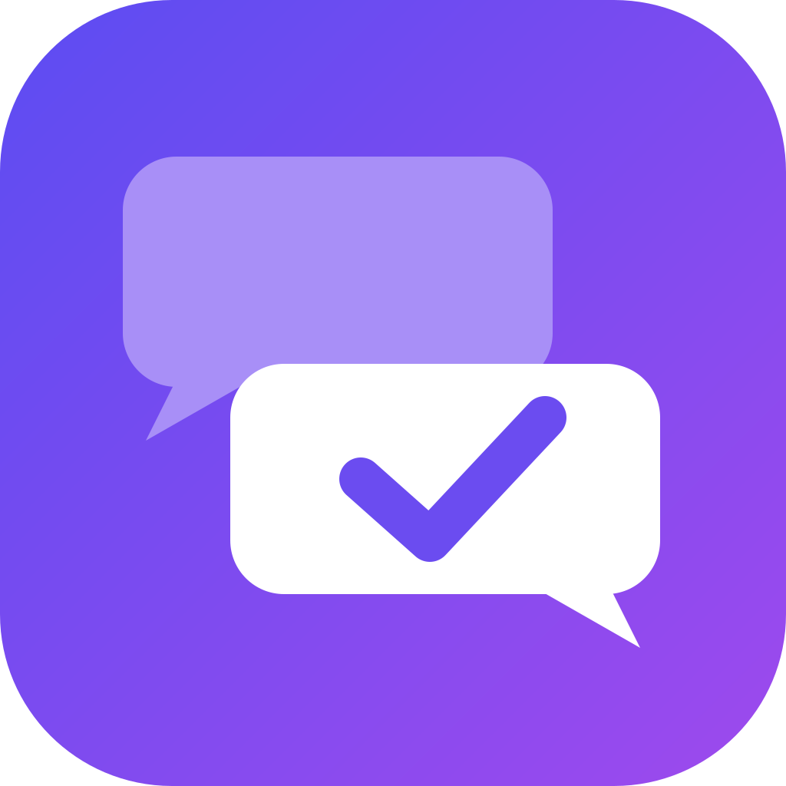

Interview Gym
Übe die häufigsten Fragen aus Vorstellungsgesprächen laut, mit Timer und Aufnahme, und bewerte deine Antworten ehrlich. Alle Daten bleiben auf deinem iPhone.
Häufige Fragen
Wie kündige ich Premium?
Öffne auf dem iPhone die Einstellungen, tippe oben auf deinen Namen und dann auf „Abonnements“. Dort kannst du Interview Gym Premium kündigen. Alternativ in der App unter Profil → „Abo verwalten“.
Ich habe Premium gekauft, aber es ist nicht freigeschaltet.
Tippe in der App unter Profil auf „Käufe wiederherstellen“. Achte darauf, dass du mit demselben Apple-Account angemeldet bist, mit dem du gekauft hast.
Wo werden meine Antworten und Aufnahmen gespeichert?
Nur lokal auf deinem iPhone. Es gibt kein Konto und keinen Server. Details findest du in der Datenschutzerklärung.
Wie lösche ich meine Daten?
In der App unter Profil → „Alle Übungen und Aufnahmen löschen“. Wenn du die App löschst, werden ebenfalls alle Daten entfernt.
Kann ich die App ohne Mikrofon nutzen?
Ja. Schalte vor dem Antworten „Antwort aufnehmen“ aus oder ändere die Voreinstellung unter Profil → Training.
Kontakt
Fragen, Feedback oder ein Fehler gefunden? Schreib an moritz.nickel244@gmail.com.